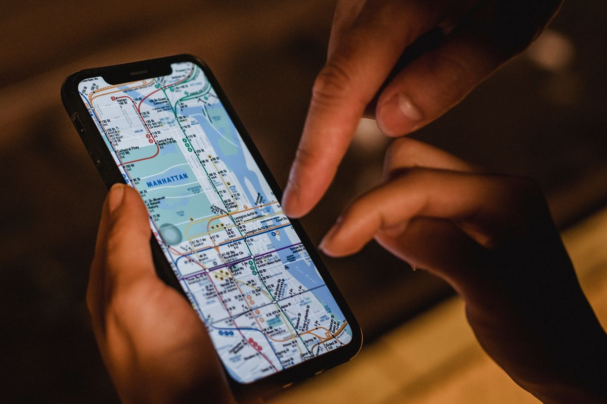

Personal safety, wearable and app
Help, one press away.
SafeTag sends an SOS and your live location to the people you trust. No unlocking your phone, no typing, no explaining where you are.
Android 6 or newer. About 24 MB.
How it works
From one press to people on their way.
You press
On the SafeTag wearable, or the SOS button in the app. Press twice for an alarm, or hold for a silent alert.
SafeTag sends
The alert and your position reach our server over the mobile network in about two seconds.
Contacts are alerted
Their phones ring like a call and open a live map of where you are.
It keeps trying
If the first person doesn't respond, the next person in your list is alerted, and so on.
SOS
Loud when you want attention. Silent when you don't.
Some situations call for noise. Others get worse if anyone notices you asking for help. SafeTag has one button and two ways to press it.
- Press twice for an alarm that draws attention, plus the alert to your contacts.
- Hold for three seconds for a silent alert. No sound, no light.
- Cancel it yourself the moment you're safe.

Live location
They see where you are, not where you were.
During an alert your contacts follow you on a map as you move, along with the path you've taken. With the wearable, a contact you've allowed can also ask it for its position at any time.
Journeys and safe zones
For the trip home, every day.
Plan a route before you leave, the way you would on a maps app, or record one you take often. If you leave it for 45 seconds, or don't arrive when expected, your contacts are told. Come back to the route and the alert closes by itself.
Mark places such as home and university as safe zones, and contacts get a quiet notice when you arrive or leave.
Trusted contacts
You decide who knows, and how much.
Invite family and friends with a link. You set the order they're alerted in and what each person may see: your location, your journeys, your safe zones. An SOS always reaches everyone.
The device
Works when your phone can't.
A dead battery, a locked screen, a phone that's been taken or is out of reach. The SafeTag wearable has its own mobile connection and its own GPS, and sits on a key ring or a bag zip.
In development. The app does the same job using your phone today.
- Own SIMSends alerts, and can call your contacts, with no phone involved.
- Built-in GPSReports its position every few seconds during an alert or a journey.
- MicrophoneYour contacts can hear what is happening. There is no speaker, so nobody near you hears them.
- BuzzerA loud alarm for the audible SOS, and a short buzz if you drift off your route.
- One buttonLarge enough to find by feel in a pocket.
Get the app
Try the test build.
SafeTag isn't on the Play Store yet, so Android asks for one extra permission the first time you install it.
Android 6 or newer. About 24 MB.
Installing
Four steps on your Android phone.
Download
Tap the Android button. If your browser warns about the file, choose "Download anyway".
Open the file
Tap the download notification, or find SafeTag.apk in your Downloads folder.
Allow the install
Android will ask you to allow installs from your browser. Switch it on, go back, and tap Install.
Sign up
Create an account, allow location and notifications, then invite a trusted contact.
Questions
Good to know before you try it.
Do I need the wearable to use SafeTag?
No. The app turns your phone into the SafeTag, and nearly everything on this page works that way today. The wearable is for when you can't use your phone.
Is there an iPhone version?
Not yet. The iPhone app is in development. For now SafeTag is for Android.
Who can see my location?
Only the trusted contacts you add, and only what you allow each of them. During an SOS every contact can see where you are.
Should I rely on this in a real emergency?
Not as your only way to get help. SafeTag is a student project in testing. Use it alongside calling your local emergency services, not in place of them.
Will my account be kept?
We reset the test server from time to time, so you may need to sign up again. Installing a newer version over the old one keeps your account.